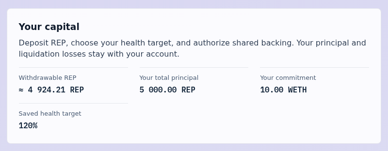
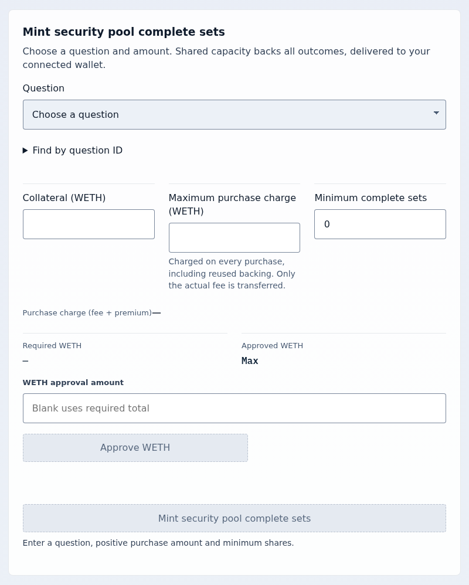

Tutorial
Back a shared security pool and mint shares
Use the browser simulator to add 1 REP to a shared security pool, then purchase complete sets for one of its questions. A complete set contains one share of every outcome. You will see your deposited REP rise from 5,000 to 5,001 REP and receive shares in your simulated wallet.
Open the prepared security pool
This exercise uses fake assets in a browser-local chain. From a prepared checkout, run bun run app:serve:statoblast and open http://localhost:12347/#/watchlist?simulate=1&genesis=yes&simScenario=securitypoolx2. No wallet extension or live funds are needed. Under Saved security pools, select Open. Open REP price to check the accepted price, then return to Capital.
The fixture supplies two registered questions, 5,000 REP deposited in your position, a 10 WETH commitment and a 120% health target. The security pool shares that commitment across its questions; each question has separate outcome shares. See How Statoblast works for the economic model.

Add one REP
- In Deposit REP, enter
1in REP amount. If an approval is requested, approve the displayed amount and confirm its review. - Select Deposit REP, review the transaction, and confirm it.
- Wait for Transaction confirmed. Under Your position, check that Your REP deposited is now 5,001 REP. Your commitment remains 10 WETH: depositing does not automatically increase it.
Purchase complete sets
- Select Augur Statoblast in the header to return to the Watchlist. Under Saved questions, open either saved question. Read Resolution rules and details to verify its full ID and security pool.
- On Shares, select Mint complete sets and enter
0.01as the Collateral amount. - Review the funding amount. If WETH approval is required, approve it and wait for confirmation. Select Mint complete sets again, review the fee and how your balances will change, then select Continue in wallet.
- Wait for Transaction confirmed, then inspect your outcome balances under Your holdings. Each outcome has the same newly minted quantity.

See Fees for purchase costs and the capital guardrails for withdrawal rules.